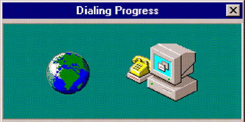
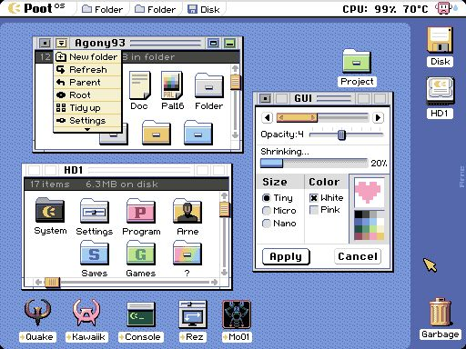

¿Qué es Internet?
Hace referencia a una gran red mundial de computadoras conectadas mediante diferentes tipos de enlaces (satelitales, por radio o, incluso, submarinos). Esta gran Red permite compartir información.
¿Qué son los proveedores de Internet?
Una empresa que le proporciona acceso a Internet, normalmente a través de una conexión de acceso telefónico, de DSL o de banda ancha. Los ISP también pueden ofrecer servicios relacionados, como cuentas de correo electrónico, hospedaje web, registro de nombres de dominio e incluso comunicaciones de datos y servicios telefónicos.
Tipos de proveedores de Internet
| Tipo | Descripción |
|---|
| ISP de acceso telefónico | Utilizan líneas telefónicas tradicionales para proporcionar acceso a Internet a los clientes, quienes se conectan a Internet marcando un número de teléfono mediante un módem. |
| ISP de DSL | La línea de suscriptor digital (DSL) proporciona velocidades más rápidas que el acceso telefónico y la conexión siempre está activa. |
| ISP por cable | Utilizan cables coaxiales para proporcionar acceso a Internet. La conexión está siempre activa y proporciona velocidades más rápidas que DSL. |
| ISP de fibra | Por medio de cables de fibra óptica proporcionan acceso a Internet. La fibra proporciona las velocidades más rápidas de todos los tipos de ISP, pero no está ampliamente disponible en todas las áreas. |
| ISP por radiofrecuencia (banda ancha inalámbrica) | En el servicio que se ofrece en lugares remotos con acceso complejo, donde no existe infraestructura de cable. Así los ISP Internet usando antenas de radiofrecuencia pueden ofrecer su servicio (habitual en zonas rurales y con un coste elevado). |
| ISP por satélite | En este caso el ISP se vale de conexiones inalámbricas vía satélite, para ofrecer servicio de internet en zonas remotas (sin infraestructura de antenas ni infraestructura por cables). Estas conexiones por satélite suelen ofrecer una rápida velocidad de descarga, pero son muy lentas en la subida. |

Protocolos de Aplicación
El protocolo de aplicación es un aspecto fundamental en el mundo de la tecnología y las comunicaciones. Es el conjunto de reglas y normas que permiten que los dispositivos y las aplicaciones puedan comunicarse entre sí de manera eficiente y efectiva.
Imagina el protocolo de aplicación como el idioma que hablan los dispositivos y las aplicaciones para entenderse y trabajar juntos. Sin un protocolo establecido, sería como intentar tener una conversación con alguien que habla un idioma completamente diferente al tuyo. Sería confuso y difícil de entenderse.
Carpeta Local VS Carpeta Remota
La carpeta local es usada para almacenar datos que son específicos de un sistema de Windows, lo que significa que los datos no están sincronizados entre PCs.
La carpeta remota es la carpeta donde se almacenan los archivos del sitio en el servidor web.
¿Qué es la experiencia de usuario?
Conjunto de factores y elementos relacionados con el proceso de interacción de un usuario respecto a un producto o servicio. A menudo, este concepto se aplica a la interacción con páginas web y aplicaciones.
¿Qué es interfaz de usuario?
Consiste en un medio que facilita el control de un software o hardware específico, por parte de un usuario. De tal manera que, la UI acepta que un cliente lleve a cabo acciones e interactúe con las diversas opciones que ofrece un equipo electrónico.
Tabla de proveedores gratuitos y de pago
| Proveedores gratuitos | Proveedores de pago |
|---|
| CMS Hub. No tendrás que pagar por el servicio ni por el uso, tráfico o almacenamiento. Lo mejor es que no necesitas conocimientos técnicos o herramientas de alojamiento de terceros para ponerlo en marcha. | Hostinger. Se creó en 2004 con el espíritu del emprendedor que establece un negocio con recursos limitados. Esta empresa inició con una oferta premium, pero a un precio menor que la competencia. Ahora tiene presencia en casi 180 países. |
| Infinity Free. Te permite alojar cualquier sitio web y ofrece un subdominio de forma gratuita. Tiene una garantía de que tu sitio web estará disponible y será rápido, sin costo alguno. | SiteGround. Creado en 2004, SiteGround cuenta con servidores en América, Europa y Asia. Ofrece servicios a millones de sitios en todo el mundo. Es uno de los servicios de hosting recomendados para quienes prefieren programar sus páginas con Linux. |
| 000webhost. Te brinda de forma gratuita un sitio web con 300 MB de espacio en disco, así como una banda de ancha limitada a 3 GB. Si requieres soporte y mejores funciones, cuenta con planes de pago. | GoDaddy. Este es uno de los proveedores más socorridos para crear sitios web y comprar dominios. Su comunicación se ha dirigido sobre todo a las pequeñas empresas y emprendedores, pues acompañan a sus clientes desde que eligen el nombre que se convertirá en su presencia en línea hasta la construcción de sus páginas. |
| Byet. Promete un ancho de banda amplio y opciones de subdominios. Cuenta con una amplia comunidad a la que podrás recurrir cuando necesites ayuda en algún tema de configuración. | HostGator. Fundado en 2012, HostGator tiene su base en Texas y se ha ganado muchos adeptos gracias a una interfaz fácil de usar. En su página anuncian tener más de 8 millones de sitios alojados en sus servidores. Aunque ofrecen hosting, dedicado, reseller y VPS, se ha mencionado que el cloud hosting es en el que se distinguen. |
| Google Cloud. Google reunió sus aplicaciones de desarrollo web en un solo espacio: está todo lo que se refiere a tecnología almacenada en la nube, incluyendo un servicio de cloud hosting. Aunque utilizarlo no garantiza que el posicionamiento SEO o la rapidez de carga tengan un tratamiento prioritario, vale la pena conocer sus soluciones. |
| Dinahosting. Tanto si necesitas una página básica como un proyecto web de alto rendimiento. Además de contar con precios competitivos, sus servicios de hosting son de alta calidad y confianza gracias a sus completas características. |
| Squarespace. Originalmente, Squarespace estaba destinado para ofrecer servicio de alojamiento a blogs. Con el tiempo se convirtió también en una empresa dedicada a la creación de sitios web, con un enfoque especial en la facilidad de edición de plantillas ya hechas, gracias al proceso de «arrastrar y soltar» elementos en espacios designados para imágenes, texto e hipervínculos. |

¿Qué elementos debo tener en cuenta al contratar un proveedor de hosting para mi proyecto web?
- Elige un proveedor de hosting con varias opciones de alojamiento. El servicio más común que suelen ofrecer es el hosting compartido, pero otros con bastante popularidad son los VPS (servidores privados virtuales). También ofrecerán, en la mayoría de los casos, alojamiento dedicado, hosting específico para webs con WordPress y otros CMS, reventa de hosting y hosting en la nube.
- Precios y opciones de pago. Para una empresa, ceñirse a un presupuesto es importante para cualquier actividad, por lo que los precios, y las formas de pago de los distintos proveedores a elegir son una de las variables a considerar para elegir proveedor de hosting. Es importante asegurarse de que los sistemas de pago que ofrecen, y las facturas, son transparentes y detalladas.
- El Panel de control. Desde esta pantalla es donde tendrás el control de los servicios que contratarás al proveedor de hosting elegido. Desde él podrás gestionar los archivos de la página, los correos electrónicos, los certificados y el código base de la web. Todo en un mismo punto.
- Copias de seguridad automática del proveedor de hosting. Las webs, aunque estén alojadas en espacios seguros, pueden sufrir un ataque. También se puede corromper alguno de sus archivos, o el servidor en el que están sus archivos sufrir una avería o catástrofe. Por eso es importante contar con copias de seguridad. De esta manera, si hay cualquier problema, la página podrá restaurarse sin mayores complicaciones.
- Soporte técnico del proveedor de hosting. El soporte técnico es esencial para un proveedor de hosting. Por eso es importante comprobar qué canales de soporte ofrecen los proveedores, su velocidad de respuesta y la relevancia de la respuesta recibida para solucionar las incidencias. Para una empresa es importante contar con soporte de tipo 24/7, y a ser posible con atención mediante chat o incluso por mensajería instantánea.
- Cetificados SSL y tiempo de actividad y velocidad del servidor. Los certificados SSL permiten que los navegadores web puedan autenticar una web. Sin él, es poco probable que la página reciba visitas, porque los posibles visitantes las identificarán como inseguras y no entrarán. Por suerte, la mayoría de proveedores de hosting ofrecen certificados SSL gratuitos, incluso en sus planes más económicos y básicos. Pero hay que asegurarse de que es así. Si no los ofrece, descarta al proveedor.
- Opciones de migración. Puede que en el futuro necesites migrar una web a otro proveedor de hosting. Bien porque no estás satisfecho, o porque llega un momento que no puede ofrecerte lo que necesitas. Por eso es importante asegurarse, desde un primer momento, que ofrece unas opciones para realizar migraciones adecuadas. Es muy probable que las tengan, pero puede que en algunos casos el servicio sea de pago. Tenlo claro antes de elegir el proveedor para la web.
¿Qué es y para qué sirve el html semántico?
HTML, que por sus siglas en ingles significa HyperText Markup Language, y que se traduce como Lenguaje de Marcas de HiperTexto, es el lenguaje de marcado estándar establecido por la W3C, o el consorcio WWW; el cual es el organismo que se encarga de estandarizar la mayoría de las tecnologías relacionadas con la web.
La semántica hace referencia al significado de las palabras y al significado de las oraciones, por ejemplo, cuando leemos un texto coherente, que utiliza palabras y oraciones adecuadas y que le dan sentido a lo que leemos.